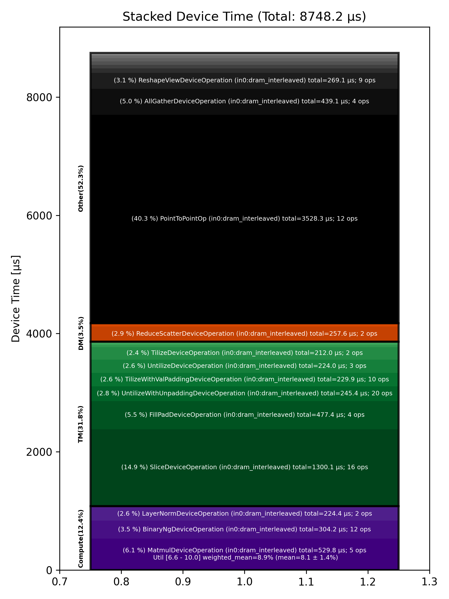

🚀 Performance Report 🚀 ======================== ID Total % Bound OP Code Device Device Time Op-to-Op Gap Cores DRAM DRAM % FLOPs FLOPs % Math Fidelity ---------------------------------------------------------------------------------------------------------------------------------------------------------------------------------- 28 0.2 % LayerNormDeviceOperation 18 112 μs 1 BF16, BF16 => BF16 65 1.5 % SLOW MatmulDeviceOperation 32 x 2880 x 640 11 44 μs 805 μs 20 47 GB/s 16.5 % 2.7 TFLOPs 6.6 % HiFi2 BF16 x BFP8 => BF16 81 0.3 % NLPCreateQKVHeadsDecodeDeviceOperation 4 5 μs 169 μs 16 BF16 => BF16 103 0.2 % ShardedToInterleavedDeviceOperation 2 1 μs 128 μs 16 BF16 => BF16 150 0.6 % RotaryEmbeddingDeviceOperation 15 8 μs 328 μs 16 BF16, BF16 => BF16 187 0.4 % SliceDeviceOperation 17 2 μs 246 μs 32 BF16 => BF16 205 0.5 % InterleavedToShardedDeviceOperation 31 1 μs 259 μs 16 BF16 => BF16 243 0.4 % PagedUpdateCacheDeviceOperation 21 4 μs 231 μs 16 BF16, BF16 => BF16 281 0.4 % PagedUpdateCacheDeviceOperation 12 4 μs 243 μs 16 BF16, BF16 => BF16 298 0.4 % ShardedToInterleavedDeviceOperation 28 1 μs 231 μs 16 BF16 => BF16 347 0.2 % RotaryEmbeddingDeviceOperation 17 8 μs 123 μs 16 BF16, BF16 => BF16 373 0.2 % SliceDeviceOperation 23 2 μs 128 μs 32 BF16 => BF16 402 0.4 % SdpaDecodeDeviceOperation 20 17 μs 179 μs 72 BF16, BF16 => BF16 431 0.2 % PermuteDeviceOperation 6 22 μs 110 μs 72 BF16 => BF16 470 0.4 % ReshapeViewDeviceOperation 15 14 μs 230 μs 16 BF16 => BF16 489 1.1 % SLOW MatmulDeviceOperation 32 x 512 x 2880 30 15 μs 603 μs 45 114 GB/s 39.5 % 6.3 TFLOPs 6.9 % HiFi2 BF16 x BFP8 => BF16 529 1.1 % AllGatherDeviceOperation 0 87 μs 508 μs 24 BF16 => BF16 548 0.4 % FillPadDeviceOperation 26 155 μs 47 μs 8 BF16 => BF16 582 0.1 % FastReduceNCDeviceOperation 3 10 μs 35 μs 72 BF16 => BF16 635 0.4 % SliceDeviceOperation 17 3 μs 224 μs 72 BF16 => BF16 661 0.5 % BinaryNgDeviceOperation 23 5 μs 297 μs 72 BF16, BF16 => BF16 704 0.5 % BinaryNgDeviceOperation 9 5 μs 257 μs 72 BF16, BF16 => BF16 729 0.6 % LayerNormDeviceOperation 12 112 μs 210 μs 1 BF16, BF16 => BF16 745 0.2 % SliceDeviceOperation 0 2 μs 129 μs 23 BF16 => BF16 776 0.5 % UntilizeWithUnpaddingDeviceOperation 1 9 μs 262 μs 45 BF16 => BF16 826 0.5 % SliceDeviceOperation 16 2 μs 280 μs 16 BF16 => BF16 862 0.5 % TilizeWithValPaddingDeviceOperation 11 37 μs 238 μs 1 BF16 => BF16 889 0.4 % SliceDeviceOperation 12 2 μs 224 μs 23 BF16 => BF16 928 0.5 % UntilizeWithUnpaddingDeviceOperation 9 9 μs 247 μs 45 BF16 => BF16 935 0.5 % SliceDeviceOperation 2 2 μs 254 μs 16 BF16 => BF16 971 0.5 % TilizeWithValPaddingDeviceOperation 29 37 μs 267 μs 1 BF16 => BF16 1021 0.4 % CopyDeviceOperation 19 2 μs 205 μs 23 BF16 => BF16 1047 0.2 % CopyDeviceOperation 14 2 μs 110 μs 23 BF16 => BF16 1087 0.4 % CopyDeviceOperation 10 2 μs 242 μs 23 BF16 => BF16 1095 0.2 % CopyDeviceOperation 2 2 μs 104 μs 23 BF16 => BF16 1126 1.2 % PointToPointOp 16 31 μs 660 μs 1 BF16, BF16 => BF16 1140 1.4 % PointToPointOp 24 32 μs 756 μs 1 BF16, BF16 => BF16 1156 0.8 % PointToPointOp 17 30 μs 430 μs 1 BF16, BF16 => BF16 1158 1.1 % PointToPointOp 25 29 μs 558 μs 1 BF16, BF16 => BF16 1200 0.4 % PointToPointOp 27 28 μs 192 μs 1 BF16, BF16 => BF16 1258 0.9 % PointToPointOp 10 28 μs 502 μs 1 BF16, BF16 => BF16 1335 7.4 % UntilizeWithUnpaddingDeviceOperation 14 19 μs 4,106 μs 1 BF16 => BF16 1347 0.2 % UntilizeWithUnpaddingDeviceOperation 25 19 μs 103 μs 1 BF16 => BF16 1406 0.2 % UntilizeWithUnpaddingDeviceOperation 11 19 μs 120 μs 1 BF16 => BF16 1431 0.1 % UntilizeWithUnpaddingDeviceOperation 14 19 μs 62 μs 1 BF16 => BF16 1468 0.3 % ConcatDeviceOperation 18 2 μs 169 μs 64 BF16, BF16 => BF16 1503 0.2 % TilizeWithValPaddingDeviceOperation 10 10 μs 121 μs 2 BF16 => BF16 1535 0.4 % UntilizeWithUnpaddingDeviceOperation 10 27 μs 214 μs 2 BF16 => BF16 1549 0.4 % RepeatDeviceOperation 31 8 μs 189 μs 72 BF16 => BF16 1598 0.5 % TilizeWithValPaddingDeviceOperation 11 22 μs 244 μs 8 BF16 => BF16 1632 1.5 % SLOW MatmulDeviceOperation b={4} x 64 x 736 x 5760 19 208 μs 614 μs 60 97 GB/s 33.8 % 10.4 TFLOPs 8.4 % HiFi2 BF16 x BFP8 => BF16 1649 1.1 % ReduceScatterDeviceOperation 0 103 μs 500 μs 24 BF16 => BF16 1681 1.0 % AllGatherDeviceOperation 0 101 μs 438 μs 40 BF16 => BF16 1718 0.1 % BinaryNgDeviceOperation 15 48 μs 35 μs 72 BF16, BF16 => BF16 1748 0.4 % UntilizeDeviceOperation 22 111 μs 133 μs 60 BF16 => BF16 1768 1.4 % SliceDeviceOperation 1 608 μs 191 μs 72 BF16 => BF16 1801 0.2 % TilizeDeviceOperation 0 106 μs 1 μs 45 BF16 => BF16 1851 0.0 % UnaryNgDeviceOperation 17 16 μs 1 μs 72 BF16 => BF16 1873 0.1 % BinaryNgDeviceOperation 4 23 μs 41 μs 72 BF16, BF16 => BF16 1893 0.6 % UntilizeDeviceOperation 27 109 μs 215 μs 60 BF16 => BF16 1930 1.3 % SliceDeviceOperation 28 608 μs 117 μs 72 BF16 => BF16 1984 0.2 % TilizeDeviceOperation 9 106 μs 1 μs 45 BF16 => BF16 1997 0.0 % UnaryNgDeviceOperation 31 17 μs 1 μs 72 BF16 => BF16 2039 0.0 % BinaryNgDeviceOperation 14 24 μs 1 μs 72 BF16, BF16 => BF16 2058 0.2 % UnaryNgDeviceOperation 28 19 μs 101 μs 72 BF16 => BF16 2083 0.5 % BinaryNgDeviceOperation 25 23 μs 254 μs 72 BF16, BF16 => BF16 2124 0.4 % BinaryNgDeviceOperation 30 23 μs 220 μs 72 BF16, BF16 => BF16 2173 1.5 % SLOW MatmulDeviceOperation b={4} x 64 x 2880 x 736 20 230 μs 592 μs 23 45 GB/s 15.6 % 4.7 TFLOPs 10.0 % HiFi2 BF16 x BFP8 => BF16 2184 0.0 % BinaryNgDeviceOperation 1 8 μs 1 μs 72 BF16, BF16 => BF16 2235 0.4 % ReshapeViewDeviceOperation 17 161 μs 72 μs 72 BF16 => BF16 2244 0.2 % TypecastDeviceOperation 26 5 μs 98 μs 72 BF16 => FP32 2297 1.0 % SLOW MatmulDeviceOperation 32 x 2880 x 32 21 33 μs 503 μs 1 14 GB/s 5.0 % 0.2 TFLOPs 8.8 % HiFi2 FP32 x BFP8 => FP32 2307 0.2 % TypecastDeviceOperation 25 2 μs 91 μs 1 FP32 => BF16 2347 0.3 % FillPadDeviceOperation 29 3 μs 176 μs 1 BF16 => BF16 2391 0.5 % PadDeviceOperation 14 35 μs 262 μs 2 BF16 => BF16 2431 0.4 % FillPadDeviceOperation 10 5 μs 215 μs 1 BF16 => BF16 2447 0.2 % TopKDeviceOperation 6 44 μs 91 μs 1 BF16 => BF16 2487 0.2 % SliceDeviceOperation 14 1 μs 127 μs 1 BF16 => BF16 2521 0.5 % SliceDeviceOperation 12 1 μs 267 μs 1 UINT16 => UINT16 2530 0.5 % TypecastDeviceOperation 24 2 μs 269 μs 1 UINT16 => FP32 2575 0.4 % ReshapeViewDeviceOperation 6 5 μs 238 μs 16 FP32 => FP32 2625 0.5 % TypecastDeviceOperation 8 3 μs 252 μs 16 FP32 => INT32 2648 0.5 % UntilizeWithUnpaddingDeviceOperation 13 3 μs 267 μs 16 INT32 => INT32 2670 0.4 % UntilizeWithUnpaddingDeviceOperation 7 3 μs 242 μs 16 INT32 => INT32 2708 0.2 % PermuteDeviceOperation 22 3 μs 110 μs 16 INT32 => INT32 2742 0.4 % PermuteDeviceOperation 15 3 μs 219 μs 16 INT32 => INT32 2763 0.4 % ConcatDeviceOperation 29 2 μs 224 μs 32 INT32, INT32 => INT32 2815 0.2 % PermuteDeviceOperation 10 3 μs 111 μs 16 INT32 => INT32 2846 0.3 % TilizeWithValPaddingDeviceOperation 11 7 μs 157 μs 16 INT32 => INT32 2865 0.5 % SoftmaxDeviceOperation 4 23 μs 268 μs 72 BF16 => BF16 2897 1.1 % AllGatherDeviceOperation 0 63 μs 571 μs 24 INT32 => INT32 2914 0.6 % AllBroadcastDeviceOperation 8 58 μs 267 μs 4 BF16 => BF16 2966 0.3 % UntilizeWithUnpaddingDeviceOperation 15 7 μs 135 μs 1 BF16 => BF16 3007 0.3 % UntilizeWithUnpaddingDeviceOperation 10 7 μs 167 μs 1 BF16 => BF16 3030 0.2 % UntilizeWithUnpaddingDeviceOperation 15 7 μs 102 μs 1 BF16 => BF16 3059 0.3 % UntilizeWithUnpaddingDeviceOperation 21 7 μs 164 μs 1 BF16 => BF16 3083 0.2 % ConcatDeviceOperation 29 2 μs 109 μs 64 BF16, BF16 => BF16 3113 0.3 % TilizeWithValPaddingDeviceOperation 0 5 μs 171 μs 2 BF16 => BF16 3143 0.5 % ReshapeViewDeviceOperation 2 10 μs 279 μs 8 INT32 => INT32 3178 0.4 % SliceDeviceOperation 28 2 μs 222 μs 8 INT32 => INT32 3222 0.5 % UntilizeWithUnpaddingDeviceOperation 15 14 μs 249 μs 8 INT32 => INT32 3248 0.5 % SliceDeviceOperation 5 4 μs 271 μs 72 INT32 => INT32 3267 0.4 % TilizeWithValPaddingDeviceOperation 25 8 μs 228 μs 8 INT32 => INT32 3307 0.5 % BinaryNgDeviceOperation 29 11 μs 270 μs 72 INT32, INT32 => INT32 3345 0.4 % BinaryNgDeviceOperation 4 3 μs 246 μs 72 INT32, INT32 => INT32 3375 0.4 % ReshapeViewDeviceOperation 6 7 μs 244 μs 8 INT32 => INT32 3394 0.4 % ReshapeViewDeviceOperation 24 3 μs 235 μs 8 BF16 => BF16 3433 0.2 % UntilizeWithUnpaddingDeviceOperation 0 7 μs 107 μs 1 INT32 => INT32 3471 0.3 % UntilizeWithUnpaddingDeviceOperation 6 6 μs 166 μs 1 BF16 => BF16 3510 0.5 % ScatterDeviceOperation 15 60 μs 243 μs 1 BF16, INT32 => BF16 3527 0.4 % TilizeWithValPaddingDeviceOperation 2 5 μs 213 μs 64 BF16 => BF16 3581 0.5 % ReshapeViewDeviceOperation 19 23 μs 229 μs 2 BF16 => BF16 3596 0.5 % UntilizeDeviceOperation 30 4 μs 286 μs 2 BF16 => BF16 3632 2.4 % MeshPartitionDeviceOperation 2 2 μs 1,346 μs 64 BF16 => BF16 3656 0.3 % TilizeWithValPaddingDeviceOperation 1 5 μs 144 μs 2 BF16 => BF16 3699 0.3 % TransposeDeviceOperation 21 2 μs 168 μs 72 BF16 => BF16 3734 0.5 % ReshapeViewDeviceOperation 15 17 μs 249 μs 72 BF16 => BF16 3770 0.7 % BinaryNgDeviceOperation 16 127 μs 245 μs 72 BF16, BF16 => BF16 3781 0.8 % FillPadDeviceOperation 27 315 μs 113 μs 72 BF16 => BF16 3836 0.1 % FastReduceNCDeviceOperation 18 66 μs 1 μs 72 BF16 => BF16 3853 0.3 % SliceDeviceOperation 31 33 μs 122 μs 72 BF16 => BF16 3889 1.6 % ReduceScatterDeviceOperation 0 154 μs 764 μs 24 BF16 => BF16 3921 1.0 % AllGatherDeviceOperation 0 189 μs 381 μs 40 BF16 => BF16 3946 0.0 % SliceDeviceOperation 28 8 μs 1 μs 72 BF16 => BF16 3989 0.2 % SliceDeviceOperation 23 8 μs 129 μs 72 BF16 => BF16 4033 0.4 % SliceDeviceOperation 8 8 μs 227 μs 72 BF16 => BF16 4036 0.4 % SliceDeviceOperation 26 8 μs 237 μs 72 BF16 => BF16 4075 0.5 % CopyDeviceOperation 29 9 μs 254 μs 72 BF16 => BF16 4107 0.4 % CopyDeviceOperation 29 8 μs 225 μs 72 BF16 => BF16 4151 0.2 % CopyDeviceOperation 14 8 μs 81 μs 72 BF16 => BF16 4174 0.3 % CopyDeviceOperation 7 8 μs 151 μs 72 BF16 => BF16 4200 0.7 % PointToPointOp 24 364 μs 39 μs 1 BF16, BF16 => BF16 4300 1.0 % PointToPointOp 11 534 μs 5 μs 1 BF16, BF16 => BF16 4304 1.0 % PointToPointOp 7 543 μs 4 μs 1 BF16, BF16 => BF16 4312 1.6 % PointToPointOp 15 896 μs 5 μs 1 BF16, BF16 => BF16 4318 22.7 % PointToPointOp 10 474 μs 12,231 μs 1 BF16, BF16 => BF16 4354 1.0 % PointToPointOp 9 538 μs 5 μs 1 BF16, BF16 => BF16 4417 0.0 % UntilizeWithUnpaddingDeviceOperation 8 16 μs 1 μs 16 BF16 => BF16 4433 0.0 % UntilizeWithUnpaddingDeviceOperation 4 15 μs 1 μs 16 BF16 => BF16 4473 0.0 % UntilizeWithUnpaddingDeviceOperation 12 16 μs 1 μs 16 BF16 => BF16 4505 0.0 % UntilizeWithUnpaddingDeviceOperation 12 16 μs 1 μs 16 BF16 => BF16 4538 0.3 % ConcatDeviceOperation 16 3 μs 152 μs 16 BF16, BF16 => BF16 4569 0.4 % TilizeWithValPaddingDeviceOperation 12 92 μs 124 μs 45 BF16 => BF16 4585 0.2 % ReshapeViewDeviceOperation 0 29 μs 103 μs 72 BF16 => BF16 4621 0.4 % BinaryNgDeviceOperation 31 5 μs 211 μs 72 BF16, BF16 => BF16 ---------------------------------------------------------------------------------------------------------------------------------------------------------------------------------- 100.0 % 145 device ops, 0 host ops, 0 signposts 8,748 μs 47,184 μs 💡 Advice 💡 ============ High Op-to-Op Gap ---------------- 65 1.5 % SLOW MatmulDeviceOperation 32 x 2880 x 640 11 44 μs 805 μs 20 47 GB/s 16.5 % 2.7 TFLOPs 6.6 % HiFi2 BF16 x BFP8 => BF16 81 0.3 % NLPCreateQKVHeadsDecodeDeviceOperation 4 5 μs 169 μs 16 BF16 => BF16 103 0.2 % ShardedToInterleavedDeviceOperation 2 1 μs 128 μs 16 BF16 => BF16 150 0.6 % RotaryEmbeddingDeviceOperation 15 8 μs 328 μs 16 BF16, BF16 => BF16 187 0.4 % SliceDeviceOperation 17 2 μs 246 μs 32 BF16 => BF16 205 0.5 % InterleavedToShardedDeviceOperation 31 1 μs 259 μs 16 BF16 => BF16 243 0.4 % PagedUpdateCacheDeviceOperation 21 4 μs 231 μs 16 BF16, BF16 => BF16 281 0.4 % PagedUpdateCacheDeviceOperation 12 4 μs 243 μs 16 BF16, BF16 => BF16 298 0.4 % ShardedToInterleavedDeviceOperation 28 1 μs 231 μs 16 BF16 => BF16 347 0.2 % RotaryEmbeddingDeviceOperation 17 8 μs 123 μs 16 BF16, BF16 => BF16 373 0.2 % SliceDeviceOperation 23 2 μs 128 μs 32 BF16 => BF16 402 0.4 % SdpaDecodeDeviceOperation 20 17 μs 179 μs 72 BF16, BF16 => BF16 431 0.2 % PermuteDeviceOperation 6 22 μs 110 μs 72 BF16 => BF16 470 0.4 % ReshapeViewDeviceOperation 15 14 μs 230 μs 16 BF16 => BF16 489 1.1 % SLOW MatmulDeviceOperation 32 x 512 x 2880 30 15 μs 603 μs 45 114 GB/s 39.5 % 6.3 TFLOPs 6.9 % HiFi2 BF16 x BFP8 => BF16 529 1.1 % AllGatherDeviceOperation 0 87 μs 508 μs 24 BF16 => BF16 548 0.4 % FillPadDeviceOperation 26 155 μs 47 μs 8 BF16 => BF16 582 0.1 % FastReduceNCDeviceOperation 3 10 μs 35 μs 72 BF16 => BF16 635 0.4 % SliceDeviceOperation 17 3 μs 224 μs 72 BF16 => BF16 661 0.5 % BinaryNgDeviceOperation 23 5 μs 297 μs 72 BF16, BF16 => BF16 704 0.5 % BinaryNgDeviceOperation 9 5 μs 257 μs 72 BF16, BF16 => BF16 729 0.6 % LayerNormDeviceOperation 12 112 μs 210 μs 1 BF16, BF16 => BF16 745 0.2 % SliceDeviceOperation 0 2 μs 129 μs 23 BF16 => BF16 776 0.5 % UntilizeWithUnpaddingDeviceOperation 1 9 μs 262 μs 45 BF16 => BF16 826 0.5 % SliceDeviceOperation 16 2 μs 280 μs 16 BF16 => BF16 862 0.5 % TilizeWithValPaddingDeviceOperation 11 37 μs 238 μs 1 BF16 => BF16 889 0.4 % SliceDeviceOperation 12 2 μs 224 μs 23 BF16 => BF16 928 0.5 % UntilizeWithUnpaddingDeviceOperation 9 9 μs 247 μs 45 BF16 => BF16 935 0.5 % SliceDeviceOperation 2 2 μs 254 μs 16 BF16 => BF16 971 0.5 % TilizeWithValPaddingDeviceOperation 29 37 μs 267 μs 1 BF16 => BF16 1021 0.4 % CopyDeviceOperation 19 2 μs 205 μs 23 BF16 => BF16 1047 0.2 % CopyDeviceOperation 14 2 μs 110 μs 23 BF16 => BF16 1087 0.4 % CopyDeviceOperation 10 2 μs 242 μs 23 BF16 => BF16 1095 0.2 % CopyDeviceOperation 2 2 μs 104 μs 23 BF16 => BF16 1126 1.2 % PointToPointOp 16 31 μs 660 μs 1 BF16, BF16 => BF16 1140 1.4 % PointToPointOp 24 32 μs 756 μs 1 BF16, BF16 => BF16 1156 0.8 % PointToPointOp 17 30 μs 430 μs 1 BF16, BF16 => BF16 1158 1.1 % PointToPointOp 25 29 μs 558 μs 1 BF16, BF16 => BF16 1200 0.4 % PointToPointOp 27 28 μs 192 μs 1 BF16, BF16 => BF16 1258 0.9 % PointToPointOp 10 28 μs 502 μs 1 BF16, BF16 => BF16 1335 7.4 % UntilizeWithUnpaddingDeviceOperation 14 19 μs 4,106 μs 1 BF16 => BF16 1347 0.2 % UntilizeWithUnpaddingDeviceOperation 25 19 μs 103 μs 1 BF16 => BF16 1406 0.2 % UntilizeWithUnpaddingDeviceOperation 11 19 μs 120 μs 1 BF16 => BF16 1431 0.1 % UntilizeWithUnpaddingDeviceOperation 14 19 μs 62 μs 1 BF16 => BF16 1468 0.3 % ConcatDeviceOperation 18 2 μs 169 μs 64 BF16, BF16 => BF16 1503 0.2 % TilizeWithValPaddingDeviceOperation 10 10 μs 121 μs 2 BF16 => BF16 1535 0.4 % UntilizeWithUnpaddingDeviceOperation 10 27 μs 214 μs 2 BF16 => BF16 1549 0.4 % RepeatDeviceOperation 31 8 μs 189 μs 72 BF16 => BF16 1598 0.5 % TilizeWithValPaddingDeviceOperation 11 22 μs 244 μs 8 BF16 => BF16 1632 1.5 % SLOW MatmulDeviceOperation b={4} x 64 x 736 x 5760 19 208 μs 614 μs 60 97 GB/s 33.8 % 10.4 TFLOPs 8.4 % HiFi2 BF16 x BFP8 => BF16 1649 1.1 % ReduceScatterDeviceOperation 0 103 μs 500 μs 24 BF16 => BF16 1681 1.0 % AllGatherDeviceOperation 0 101 μs 438 μs 40 BF16 => BF16 1718 0.1 % BinaryNgDeviceOperation 15 48 μs 35 μs 72 BF16, BF16 => BF16 1748 0.4 % UntilizeDeviceOperation 22 111 μs 133 μs 60 BF16 => BF16 1768 1.4 % SliceDeviceOperation 1 608 μs 191 μs 72 BF16 => BF16 1873 0.1 % BinaryNgDeviceOperation 4 23 μs 41 μs 72 BF16, BF16 => BF16 1893 0.6 % UntilizeDeviceOperation 27 109 μs 215 μs 60 BF16 => BF16 1930 1.3 % SliceDeviceOperation 28 608 μs 117 μs 72 BF16 => BF16 2058 0.2 % UnaryNgDeviceOperation 28 19 μs 101 μs 72 BF16 => BF16 2083 0.5 % BinaryNgDeviceOperation 25 23 μs 254 μs 72 BF16, BF16 => BF16 2124 0.4 % BinaryNgDeviceOperation 30 23 μs 220 μs 72 BF16, BF16 => BF16 2173 1.5 % SLOW MatmulDeviceOperation b={4} x 64 x 2880 x 736 20 230 μs 592 μs 23 45 GB/s 15.6 % 4.7 TFLOPs 10.0 % HiFi2 BF16 x BFP8 => BF16 2235 0.4 % ReshapeViewDeviceOperation 17 161 μs 72 μs 72 BF16 => BF16 2244 0.2 % TypecastDeviceOperation 26 5 μs 98 μs 72 BF16 => FP32 2297 1.0 % SLOW MatmulDeviceOperation 32 x 2880 x 32 21 33 μs 503 μs 1 14 GB/s 5.0 % 0.2 TFLOPs 8.8 % HiFi2 FP32 x BFP8 => FP32 2307 0.2 % TypecastDeviceOperation 25 2 μs 91 μs 1 FP32 => BF16 2347 0.3 % FillPadDeviceOperation 29 3 μs 176 μs 1 BF16 => BF16 2391 0.5 % PadDeviceOperation 14 35 μs 262 μs 2 BF16 => BF16 2431 0.4 % FillPadDeviceOperation 10 5 μs 215 μs 1 BF16 => BF16 2447 0.2 % TopKDeviceOperation 6 44 μs 91 μs 1 BF16 => BF16 2487 0.2 % SliceDeviceOperation 14 1 μs 127 μs 1 BF16 => BF16 2521 0.5 % SliceDeviceOperation 12 1 μs 267 μs 1 UINT16 => UINT16 2530 0.5 % TypecastDeviceOperation 24 2 μs 269 μs 1 UINT16 => FP32 2575 0.4 % ReshapeViewDeviceOperation 6 5 μs 238 μs 16 FP32 => FP32 2625 0.5 % TypecastDeviceOperation 8 3 μs 252 μs 16 FP32 => INT32 2648 0.5 % UntilizeWithUnpaddingDeviceOperation 13 3 μs 267 μs 16 INT32 => INT32 2670 0.4 % UntilizeWithUnpaddingDeviceOperation 7 3 μs 242 μs 16 INT32 => INT32 2708 0.2 % PermuteDeviceOperation 22 3 μs 110 μs 16 INT32 => INT32 2742 0.4 % PermuteDeviceOperation 15 3 μs 219 μs 16 INT32 => INT32 2763 0.4 % ConcatDeviceOperation 29 2 μs 224 μs 32 INT32, INT32 => INT32 2815 0.2 % PermuteDeviceOperation 10 3 μs 111 μs 16 INT32 => INT32 2846 0.3 % TilizeWithValPaddingDeviceOperation 11 7 μs 157 μs 16 INT32 => INT32 2865 0.5 % SoftmaxDeviceOperation 4 23 μs 268 μs 72 BF16 => BF16 2897 1.1 % AllGatherDeviceOperation 0 63 μs 571 μs 24 INT32 => INT32 2914 0.6 % AllBroadcastDeviceOperation 8 58 μs 267 μs 4 BF16 => BF16 2966 0.3 % UntilizeWithUnpaddingDeviceOperation 15 7 μs 135 μs 1 BF16 => BF16 3007 0.3 % UntilizeWithUnpaddingDeviceOperation 10 7 μs 167 μs 1 BF16 => BF16 3030 0.2 % UntilizeWithUnpaddingDeviceOperation 15 7 μs 102 μs 1 BF16 => BF16 3059 0.3 % UntilizeWithUnpaddingDeviceOperation 21 7 μs 164 μs 1 BF16 => BF16 3083 0.2 % ConcatDeviceOperation 29 2 μs 109 μs 64 BF16, BF16 => BF16 3113 0.3 % TilizeWithValPaddingDeviceOperation 0 5 μs 171 μs 2 BF16 => BF16 3143 0.5 % ReshapeViewDeviceOperation 2 10 μs 279 μs 8 INT32 => INT32 3178 0.4 % SliceDeviceOperation 28 2 μs 222 μs 8 INT32 => INT32 3222 0.5 % UntilizeWithUnpaddingDeviceOperation 15 14 μs 249 μs 8 INT32 => INT32 3248 0.5 % SliceDeviceOperation 5 4 μs 271 μs 72 INT32 => INT32 3267 0.4 % TilizeWithValPaddingDeviceOperation 25 8 μs 228 μs 8 INT32 => INT32 3307 0.5 % BinaryNgDeviceOperation 29 11 μs 270 μs 72 INT32, INT32 => INT32 3345 0.4 % BinaryNgDeviceOperation 4 3 μs 246 μs 72 INT32, INT32 => INT32 3375 0.4 % ReshapeViewDeviceOperation 6 7 μs 244 μs 8 INT32 => INT32 3394 0.4 % ReshapeViewDeviceOperation 24 3 μs 235 μs 8 BF16 => BF16 3433 0.2 % UntilizeWithUnpaddingDeviceOperation 0 7 μs 107 μs 1 INT32 => INT32 3471 0.3 % UntilizeWithUnpaddingDeviceOperation 6 6 μs 166 μs 1 BF16 => BF16 3510 0.5 % ScatterDeviceOperation 15 60 μs 243 μs 1 BF16, INT32 => BF16 3527 0.4 % TilizeWithValPaddingDeviceOperation 2 5 μs 213 μs 64 BF16 => BF16 3581 0.5 % ReshapeViewDeviceOperation 19 23 μs 229 μs 2 BF16 => BF16 3596 0.5 % UntilizeDeviceOperation 30 4 μs 286 μs 2 BF16 => BF16 3632 2.4 % MeshPartitionDeviceOperation 2 2 μs 1,346 μs 64 BF16 => BF16 3656 0.3 % TilizeWithValPaddingDeviceOperation 1 5 μs 144 μs 2 BF16 => BF16 3699 0.3 % TransposeDeviceOperation 21 2 μs 168 μs 72 BF16 => BF16 3734 0.5 % ReshapeViewDeviceOperation 15 17 μs 249 μs 72 BF16 => BF16 3770 0.7 % BinaryNgDeviceOperation 16 127 μs 245 μs 72 BF16, BF16 => BF16 3781 0.8 % FillPadDeviceOperation 27 315 μs 113 μs 72 BF16 => BF16 3853 0.3 % SliceDeviceOperation 31 33 μs 122 μs 72 BF16 => BF16 3889 1.6 % ReduceScatterDeviceOperation 0 154 μs 764 μs 24 BF16 => BF16 3921 1.0 % AllGatherDeviceOperation 0 189 μs 381 μs 40 BF16 => BF16 3989 0.2 % SliceDeviceOperation 23 8 μs 129 μs 72 BF16 => BF16 4033 0.4 % SliceDeviceOperation 8 8 μs 227 μs 72 BF16 => BF16 4036 0.4 % SliceDeviceOperation 26 8 μs 237 μs 72 BF16 => BF16 4075 0.5 % CopyDeviceOperation 29 9 μs 254 μs 72 BF16 => BF16 4107 0.4 % CopyDeviceOperation 29 8 μs 225 μs 72 BF16 => BF16 4151 0.2 % CopyDeviceOperation 14 8 μs 81 μs 72 BF16 => BF16 4174 0.3 % CopyDeviceOperation 7 8 μs 151 μs 72 BF16 => BF16 4200 0.7 % PointToPointOp 24 364 μs 39 μs 1 BF16, BF16 => BF16 4318 22.7 % PointToPointOp 10 474 μs 12,231 μs 1 BF16, BF16 => BF16 4538 0.3 % ConcatDeviceOperation 16 3 μs 152 μs 16 BF16, BF16 => BF16 4569 0.4 % TilizeWithValPaddingDeviceOperation 12 92 μs 124 μs 45 BF16 => BF16 4585 0.2 % ReshapeViewDeviceOperation 0 29 μs 103 μs 72 BF16 => BF16 4621 0.4 % BinaryNgDeviceOperation 31 5 μs 211 μs 72 BF16, BF16 => BF16 These ops have a >6 μs gap since the previous operation. Running with tracing could save 46389 μs (82.9% of overall time) Alternatively ensure device is not waiting for the host and use device.enable_async(True). Experts can try moving runtime args in the kernels to compile-time args. Matmul Optimization ------------------- 65 1.5 % SLOW MatmulDeviceOperation 32 x 2880 x 640 11 44 μs 805 μs 20 47 GB/s 16.5 % 2.7 TFLOPs 6.6 % HiFi2 BF16 x BFP8 => BF16 - If possible place input 0 in L1 (currently in DEV_2_DRAM_INTERLEAVED) - Output subblock 1x1 is small, try out_subblock_h * out_subblock_w >= 2 if possible - If your matmuls are not FLOP-bound use HiFi4 with BF16 activations for full accuracy 489 1.1 % SLOW MatmulDeviceOperation 32 x 512 x 2880 30 15 μs 603 μs 45 114 GB/s 39.5 % 6.3 TFLOPs 6.9 % HiFi2 BF16 x BFP8 => BF16 - If possible place input 0 in L1 (currently in DEV_2_DRAM_INTERLEAVED) - in0_block_w=2 and output subblock 1x2 look good 🤷 - If your matmuls are not FLOP-bound use HiFi4 with BF16 activations for full accuracy 1632 1.5 % SLOW MatmulDeviceOperation b={4} x 64 x 736 x 5760 19 208 μs 614 μs 60 97 GB/s 33.8 % 10.4 TFLOPs 8.4 % HiFi2 BF16 x BFP8 => BF16 - If possible place input 0 in L1 (currently in DEV_2_DRAM_INTERLEAVED) - in0_block_w=1 is small, try in0_block_w=2 or above - If your matmuls are not FLOP-bound use HiFi4 with BF16 activations for full accuracy 2173 1.5 % SLOW MatmulDeviceOperation b={4} x 64 x 2880 x 736 20 230 μs 592 μs 23 45 GB/s 15.6 % 4.7 TFLOPs 10.0 % HiFi2 BF16 x BFP8 => BF16 - If possible place input 0 in L1 (currently in DEV_2_DRAM_INTERLEAVED) - in0_block_w=2 and output subblock 2x1 look good 🤷 - If your matmuls are not FLOP-bound use HiFi4 with BF16 activations for full accuracy 2297 1.0 % SLOW MatmulDeviceOperation 32 x 2880 x 32 21 33 μs 503 μs 1 14 GB/s 5.0 % 0.2 TFLOPs 8.8 % HiFi2 FP32 x BFP8 => FP32 - If possible place input 0 in L1 (currently in DEV_2_DRAM_INTERLEAVED) - Output subblock 1x1 is small, try out_subblock_h * out_subblock_w >= 2 if possible 📊 Stacked report 📊 ==================== Total % Op Code Device Time Sum Op Count Op Category Min FLOPs Max FLOPs Mean FLOPs Std FLOPs Weighted Mean FLOPs -------------------------------------------------------------------------------------------------------------------------------------------------------------------------------- 40.33 % PointToPointOp (in0:dram_interleaved) 3,528.31 μs 12 Other 14.86 % SliceDeviceOperation (in0:dram_interleaved) 1,300.14 μs 16 TM 6.06 % MatmulDeviceOperation (in0:dram_interleaved) 529.81 μs 5 Compute 6.58 % 9.96 % 8.13 % 1.41 % 8.93 % 5.46 % FillPadDeviceOperation (in0:dram_interleaved) 477.43 μs 4 TM 5.02 % AllGatherDeviceOperation (in0:dram_interleaved) 439.09 μs 4 Other 3.48 % BinaryNgDeviceOperation (in0:dram_interleaved) 304.20 μs 12 Compute 3.08 % ReshapeViewDeviceOperation (in0:dram_interleaved) 269.07 μs 9 Other 2.94 % ReduceScatterDeviceOperation (in0:dram_interleaved) 257.57 μs 2 DM 2.81 % UntilizeWithUnpaddingDeviceOperation (in0:dram_interleaved) 245.42 μs 20 TM 2.63 % TilizeWithValPaddingDeviceOperation (in0:dram_interleaved) 229.88 μs 10 TM 2.56 % LayerNormDeviceOperation (in0:dram_interleaved) 224.38 μs 2 Compute 2.56 % UntilizeDeviceOperation (in0:dram_interleaved) 224.03 μs 3 TM 2.42 % TilizeDeviceOperation (in0:dram_interleaved) 212.04 μs 2 TM 0.87 % FastReduceNCDeviceOperation (in0:dram_interleaved) 75.83 μs 2 Other 0.68 % ScatterDeviceOperation (in0:dram_interleaved) 59.58 μs 1 Other 0.66 % AllBroadcastDeviceOperation (in0:dram_interleaved) 58.04 μs 1 Other 0.60 % UnaryNgDeviceOperation (in0:dram_interleaved) 52.77 μs 3 Other 0.50 % TopKDeviceOperation (in0:dram_interleaved) 44.13 μs 1 Other 0.47 % CopyDeviceOperation (in0:dram_interleaved) 41.15 μs 8 DM 0.40 % PadDeviceOperation (in0:dram_interleaved) 35.01 μs 1 TM 0.35 % PermuteDeviceOperation (in0:dram_interleaved) 30.43 μs 4 TM 0.27 % SoftmaxDeviceOperation (in0:dram_interleaved) 23.22 μs 1 Compute 0.19 % SdpaDecodeDeviceOperation (in0:dram_interleaved) 16.97 μs 1 Other 0.18 % RotaryEmbeddingDeviceOperation (in0:l1_interleaved) 16.04 μs 2 Other 0.14 % TypecastDeviceOperation (in0:dram_interleaved) 12.51 μs 4 TM 0.11 % ConcatDeviceOperation (in0:dram_interleaved) 9.20 μs 4 TM 0.10 % PagedUpdateCacheDeviceOperation (in0:dram_interleaved) 8.47 μs 2 DM 0.10 % RepeatDeviceOperation (in0:dram_interleaved) 8.47 μs 1 Other 0.05 % NLPCreateQKVHeadsDecodeDeviceOperation (in0:dram_interleaved) 4.76 μs 1 Other 0.04 % SliceDeviceOperation (in0:l1_interleaved) 3.60 μs 2 TM 0.02 % ShardedToInterleavedDeviceOperation (in0:height_sharded) 1.94 μs 2 DM 0.02 % MeshPartitionDeviceOperation (in0:dram_interleaved) 1.87 μs 1 Other 0.02 % TransposeDeviceOperation (in0:dram_interleaved) 1.85 μs 1 TM 0.01 % InterleavedToShardedDeviceOperation (in0:dram_interleaved) 1.01 μs 1 DM --------------------------------------------------------------------------------------------------------------------------------------------------------------------------------
